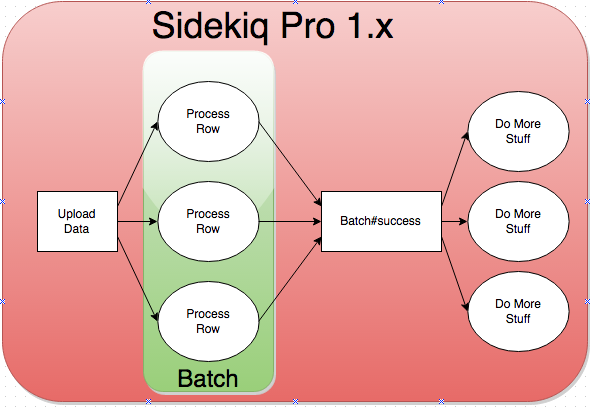
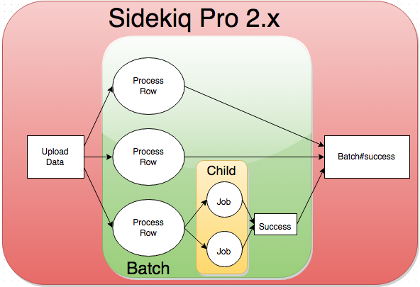

I'm happy to announce that Sidekiq Pro 2.0 is ready for general use. There's two major features and some refactoring you need to know about.
Batches
Sidekiq allows you to fire off a set of jobs to process asynchronously but you don't know when the whole set of jobs are complete:

Sidekiq Pro provides the Batch abstraction, it represents a set of jobs; you can attach callbacks to be fired when the set of jobs has finished. This allows more complex job workflows:

For 2.0, the Batch implementation and data model was overhauled for higher performance, much smaller size and Batches can now be nested: a job within a Batch can itself create a child Batch of jobs. The callbacks for the parent batch will only be fired once the child batch callbacks have finished.

This was some of the hardest code I've ever written (it requires a bag of buzzwords: asynchronous, distributed, transactional, threadsafe and fast!) but I'm really proud of the outcome. Sidekiq Pro should be able to handle job workflows of any depth now.
As part of 2.0, the batch data model changed significantly but have no fear: existing 1.x batches will process as normal.
Scheduler
Sidekiq's scheduler scans the scheduler set for jobs to perform. Unfortunately the way it scans and enqueues jobs is not atomic. There is a very very small but real chance a scheduled job could be lost.
For 2.0, I've written a Lua-based scheduler which is atomic and enqueues 50-100x faster than the existing scheduler since it does not require any network round trips. It's very easy to enable:
Sidekiq.configure_server do |config|
config.reliable_scheduler!
endIt's optional because it does require Redis 2.6.
Miscellaneous Changes
- Various deprecated APIs were removed
- Reliability features are now enabled via methods, not
requireSidekiq::Client.reliable_push! Sidekiq.configure_server do |config| config.reliable_fetch! end
Conclusion
Here's the Sidekiq Pro 2.0 Upgrade Notes. If you're not a Sidekiq Pro customer yet, you can buy Sidekiq Pro here. Enjoy!
Diagrams courtesy of the very nifty draw.io.
comments powered by Disqus